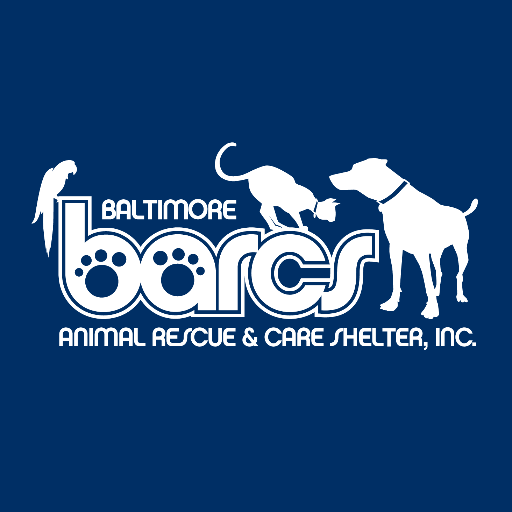

Resume
Education
 University of Maryland, Baltimore CountyAugust 2014 - December 2015
University of Maryland, Baltimore CountyAugust 2014 - December 2015
M.S. Mechanical Engineering (GPA 3.90/4.00)Baltimore, MD
Thesis: Computational Fluid Dynamics - History, Theory, and Applications
 Rensselaer Polytechnic InstituteAugust 2008 - May 2012
Rensselaer Polytechnic InstituteAugust 2008 - May 2012
B.S. Biomedical Engineering (GPA 3.57/4.00)Troy, NY
Thesis: Development of a Low-Cost Intraoperative Ligament Tension Measurement Device
Experience
Johns Hopkins School of Public HealthJune 2016 - Present
Research TechnologistBaltimore, MD
- Develop, test, and optimize molecular assays to diagnose enterics bacterial infections in areas with limited resources. Perform epidemiological surveillance of enteric pathogens in developing nations.
- Lead testing of new enterotoxigenic E. coli (ETEC) vaccine in animal trials using rabbit model. Assist in humane clinical trials to evaluate vaccine efficacy and immune response.
- Interpret and analyze data. Give bi-weekly presentations on status of research.
University of Maryland, Baltimore CountyJanuary 2015 - January 2016
Graduate Teaching AssistantBaltimore, MD
- Assisted in teaching two classes - ENME304 Machine Design and ENME489 Aerospace Propulsion.
- Responsible for teaching machine component (gear, shaft, bearing, belt, etc.) design to include kinematics, stress/strain analysis, repeated loadings, fatigue, and heating effects, among others.
- Responsible for teaching propeller, turbofan, turbojet, ramjet, and rocket engine design and function to include performance analysis of inlets, nozzles, compressors, burners, and turbines, thermodynamics cycle analysis, and analysis of multi-stage chemical rockets, among others.
- Conducted office hours to help students understand and solve homework problems. Designed and gave lectures to review content in preparation for exams.

Baltimore Animal Rescue and Care ShelterJuly 2013 - August 2014
Veterinary TechnicianBaltimore, MD
- Assist veterinarians with medical examinations, procedures, vaccinations, and medication administration.
- Independently conduct medical and behavioral evaluations of incoming animals.
- Perform phlebotomy, sedation, and humane euthanasia. Perform testing for various diseases such as parvovirus, feline leukemia virus, and feline immunodeficiency virus.
- Serve as on-call medical staff.
Publications/Presentations
-
Connor S, Voeglein J, Brubaker J, Chakraborty S, Bourgeois AL, Zhang W, Sack DA. "Adhesin tip multiepitope fusion antigen vaccine with dmLT adjuvant induces antibody production against enterotoxigenic Escherichia coli colonization factors and LT toxin in rabbits" Presented at the 2017 Johns Hopkins Vaccine Day Event. Baltimore, MD. 21 April 2017.
-
Chakraborty S, Harro CD, Brubaker J, DeNearing B, Connor S, Bourgeois AL, Sack DA. "Immunological Factors Contributing to Enhanced Protective Efficacy in Volunteers Immunized With dmLT Adjuvanted ACE 527 ETEC Vaccine" Presented at the American Society of Tropical Medicine and Hygeine 65th Annual Conference. Atlanta, GA. 13-17 November 2016.
-
Connor S, Bardon S, Brask R, Castaldi N, Lau J, Paulding S. "Development of a Low-Cost Intraoperative Ligament Tension Measurement Device" Presented at the Rensselaer Biomedical Engineering Showcase. Troy, NY. May 2012.